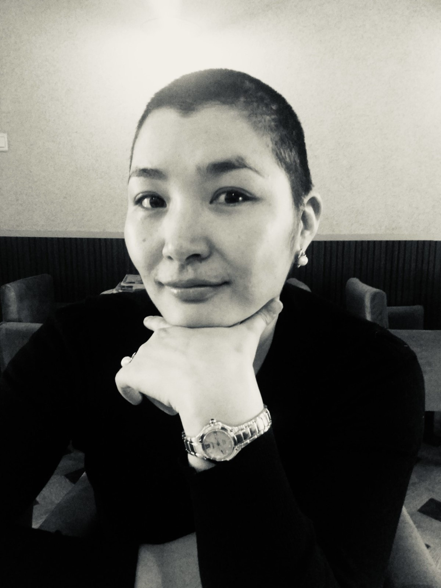

Бидний тухай
Санг үүсгэн байгуулсан түүх, хамтрагч, дэмжигчдийн талаар танилцах.
Санг үүсгэн байгуулсан түүх, хамтрагч, дэмжигчдийн талаар танилцах.
АЛСЫН ХАРАА
Хөхний хорт хавдраас урьдчилан сэргийлж, эрт илрүүлгийг хэвшүүлж, даван туулагч нарт сэтгэл зүйн болон цогц дэмжлэгийг хүртээмжтэй болгосноор хүн бүр эрүүл, аюулгүй, итгэл дүүрэн амьдрах нийгмийг хамтдаа цогцлооно.
Ягаан тууз сан нь хөхний хорт хавдраас урьдчилан сэргийлэх, нийгмийн мэдлэг, хандлагыг өөрчлөх, өвчнийг даван туулагчид болон тэдний гэр бүлд сэтгэл зүй, нийгмийн цогц дэмжлэг үзүүлэх зорилготой ашгийн төлөө бус, хүмүүнлэгийн байгууллага юм. 2017 онд байгуулагдсан цагаасаа эхлэн бид хөхний хорт хавдрын эрт илрүүлгийг сурталчлах, өвчлөлийг бууруулах, эмчилгээний үеийн болон дараах амьдралын чанарыг сайжруулахад чиглэсэн олон талт төсөл, хөтөлбөрүүдийг амжилттай хэрэгжүүлж байна.

"ЯГААН ТУУЗ САН"-гийн Удирдах зөвлөлийн дарга,
Японы КООСЭН инженерийн сургуулийг загвар болгон байгуулагдсан
"Шинэ Монгол технологийн коллеж"-ийн Англи хэлний багш асан.
Тэнгэрт одсон ч итгэл болон амьдарсаар... 2015 онд хөхний хорт хавдрын оноштой нүүр тулсан тэр мөч түүний амьдралын хамгийн хатуу сорилт төдийгүй, агуу зорилгынх нь эхлэл байлаа. Өвдөлт, айдас, эргэлзээ бүхний дунд тэрээр "Би зөвхөн өөрийнхөө төлөө бус, олон мянган эмэгтэйн төлөө тэмцэнэ" хэмээх хатамж зоригийг өвөртлөн эмчилгээгээ эхлүүлсэн юм. Хэдийгээр хорт хавдрын эсрэг эмчилгээ, мэс заслын улмаас бие махбод нь өөрчлөгдсөн ч эмэгтэй хүний дотоод гоо үзэсгэлэн, итгэл найдвараа гээлгүйгээр "Онош бол төгсгөл биш" гэдгийг олон мянган эмэгтэйд зүрх сэтгэлээрээ мэдрүүлэх хүмүүнлэгийн ариун үйлсийг түүчээлсэн билээ.
Мэргэжлийн багш хүний хувьд тэрээр мэдээлэл дутмаг байдал, төөрөгдөл нь айдсаас илүү аюултайг хамгийн сайн мэдэж байлаа. Тиймдээ ч ажлынхаа хажуугаар мэдлэг, боловсролоо тасралтгүй ахиулж, хүнд өвчинтэй тэмцэхийн зэрэгцээ Монгол Улсын Их Сургуульд гадаад хэл шинжлэлийн магистрын зэргээ амжилттай хамгаалсан нь түүний мохошгүй, хичээнгүй зан чанарын илэрхийлэл байв. Өвчин шаналал, эмчилгээний амаргүй сорилт бүрийг мэдлэгийн хүчээр даван туулж, сэтгэлийнхээ гүнд тээсэн нандин зорилгоо бодит үйл хэрэг болгон амилуулснаар өнөөдрийн "Ягаан тууз сан"-гийн галыг бадрааж, итгэл найдварын бат бөх суурийг тавьсан юм. Тэрээр "Өөрийн гараар улсаа бүтээх" эрхэм зорилготой "Шинэ Монгол технологийн коллеж"-дээ амьдралынхаа сүүлчийн мөч хүртэл багшилж, шавь нарынхаа оюунд эрдмийн гэрэл, зүрхэнд нь амьдрах эрч хүчийг бадраасан билээ. Багшийн ариун үйлсээ хүмүүнлэгийн ажилтайгаа ийнхүү хослуулж, сангаараа дамжуулан нийгмийг соён гэгээрүүлэх, оношлогдсон эмэгтэйчүүдийг айдсаас чөлөөлөх "аврах цагираг", итгэл найдварын гүүр нь болж чадсан юм.
2020 онд хавдар дахин үсэрхийлсэн гэх хатуу мэдээтэй нүүр тулсан ч түүний мохошгүй зориг өчүүхэн ч мохсонгүй. Бие махбод нь чилээрхэн туйлдаж байсан ч сэтгэлийн агуу тэнхээгээр өвчин шаналлыг сөрөн зогсож, сайн үйлсээ нэг ч өдөр таслалгүй үргэлжлүүлсэн юм. "Би чадаж байгаа юм чинь та ч бас чадна" хэмээн өөрийн биеэр үлгэрлэн, итгэл найдварын амьд жишээ болж байлаа. Ковид-19 цар тахлын түгшүүртэй өдрүүдэд ч тэрээр өөрийн өвчнийг умартан, цахим ертөнцөөр дамжуулан бусдын ганцаардлыг үргээж, урам зоригийн гэрэл гэгээг түгээсээр байлаа. 2021 онд тэрхүү хөдөлмөрч, баатарлаг эмэгтэй хорвоогийн мөнх бусыг үзүүлсэн нь бидний хувьд нөхөж баршгүй гарз байлаа. Гэвч түүний тарьсан итгэлийн үр, бусдад өгсөн хайр, дэмжлэг нь өнөөдөр ч "Ягаан тууз сан"-гийн үйл ажиллагаа бүрээр дамжин мянга мянган зүрхэнд амьдарсаар байх болно.
"Ягаан тууз сан нь олон улсын болон дотоодын технологийн тэргүүлэх платформуудын дэмжлэгийг үйл ажиллагаандаа нэвтрүүлэн ажиллаж байна. Бид Google for Nonprofits болон GitHub хөтөлбөрүүдээр дамжуулан бүтээмж, инновацыг дэмжиж, Goodstack (Percent) олон улсын баталгаажуулалтаар дамжуулан үйл ажиллагааныхаа итгэлцэл, нээлттэй байдлыг бэхжүүлсэн. Мөн QPay төлбөрийн системээр дамжуулан хандив, тусламжийг ил тод, шуурхай хүлээн авах технологийн шийдлийг ашиглан үйл ажиллагаагаа өргөжүүлэн ажиллаж байна. Бидний зорилгыг дэмждэг байгууллага, хувь хандивлагч бүрт талархал илэрхийлье."